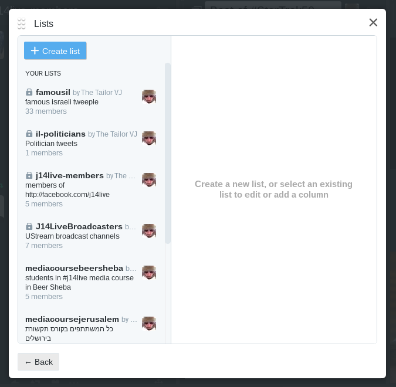

Tailor Vijay
http://facebook.com/tailorvj | @tailorvj | tailor.vj@gmail.com | 052-5369583
Twitter Basics
140 character long tweets
tagging @username
ad hoc channels #channel
Retweet = Share
Reply = Public discussion
Lists
Collections
Follow and mutual follow
DM - Direct (private) Message
Short Links
Example: http://bit.ly/1rs9j7l
Reports: http://bit.ly/1rs9j7l+
Do it: http://bitly.com
Search
Top/Live
Photos/Videos
From people you know
Near you
TweetDeck
Twitter for news prosumers
Prioritize your columns
Multiple accounts
Create a Team
Schedule Tweets
Collections
Create
Search for content
Add to collection
Share - Tweet, Embed
Lists
Search filters
“search term” - exact combination
this –that excludes that
filter:media image and video only
filter:periscope live broadcasts
:) positive mentions
near:city within:15mi
since:2016-6-27 until:2016-6-28
Combine them all!
Popular Tweets
Alerts
Tips and Tricks
Twitter Analytics
140 character limit CHEAT
Pinned Tweet
Post from Facebook - or not
Instagram to Twitter Native
Build Your List
Politicians, Journalists, Social Activists
@tamarzandberg @regev_miri @Syechimovich @naftalibennett @StavShaffir @NitzanHorowitz @Tzipi_Livni @netanyahu @IsraeliPM @Israel_MOF @knesset99 @KnessetIL @Jerusalem_Post @haaretzcom @TimesofIsrael @TheMarker @calcalist @globesnews @hazinor @news24hisr @Reshettv @GLZRadio @channel10 @Channel2News @haaretz @nana10 @einatfishbain @davidhorovitz @NadavEyalDesk @NadavPerry @amit_segal @alonbd @AyalaHasson @EytanAvriel @AsherSchechter @peretzsami @grolnik @drorfo @amsterdamski2 @alexpo @guyzo @talschneider @hkim14050017 @ha_makom @mekomit @ygurvitz @tsooff @Ha_Matar @haimhz @hamishmar @the7i @HolesNet @EldadYaniv @SylvieKeshet @chickos99 @activestills @DaphniNLeef @RikiKohan @OrLyBarlev @Yomgashum @kalkelan @Eyalo365 @aradaki @tailorvj @hadmatz
Periscope
Twitter Live Streaming
Standalone or from Twitter app
Camera position sensitive
Viewers come in and out
Limit who can watch
Share to Twitter
Encourage viewers to share
Go get 'em!
Tailor Vijay | tailor.vj@gmail.com | @tailorvj
Image Credits
All background images from flickr under creative commons license